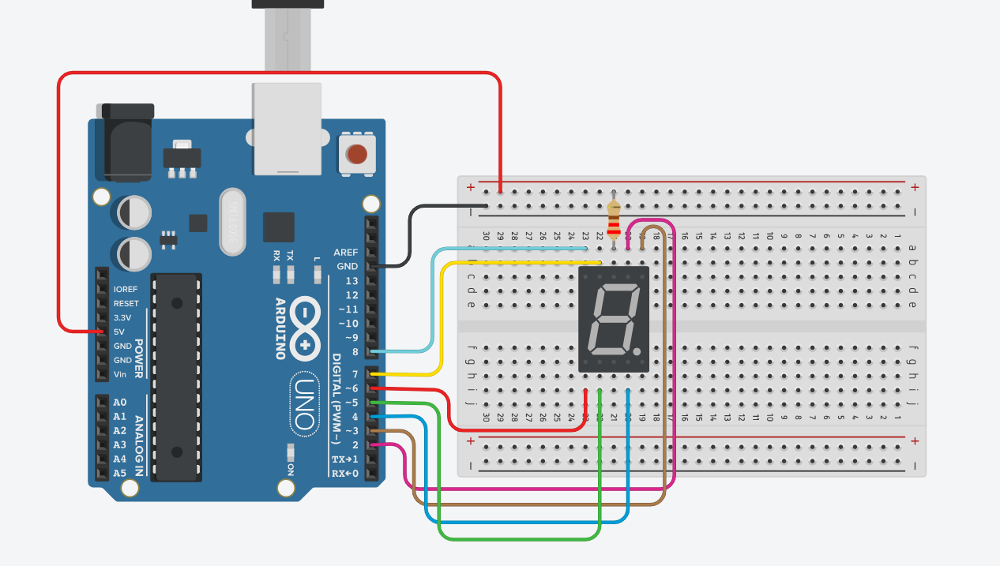
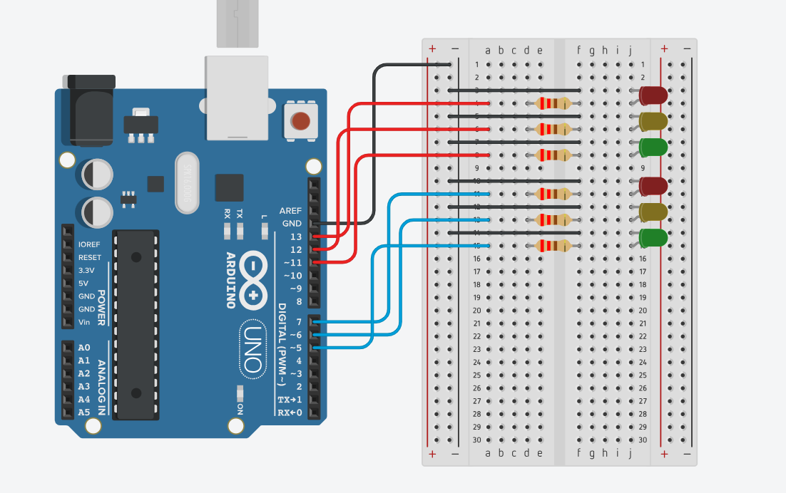
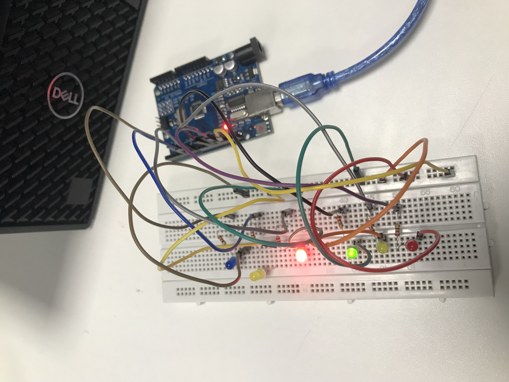
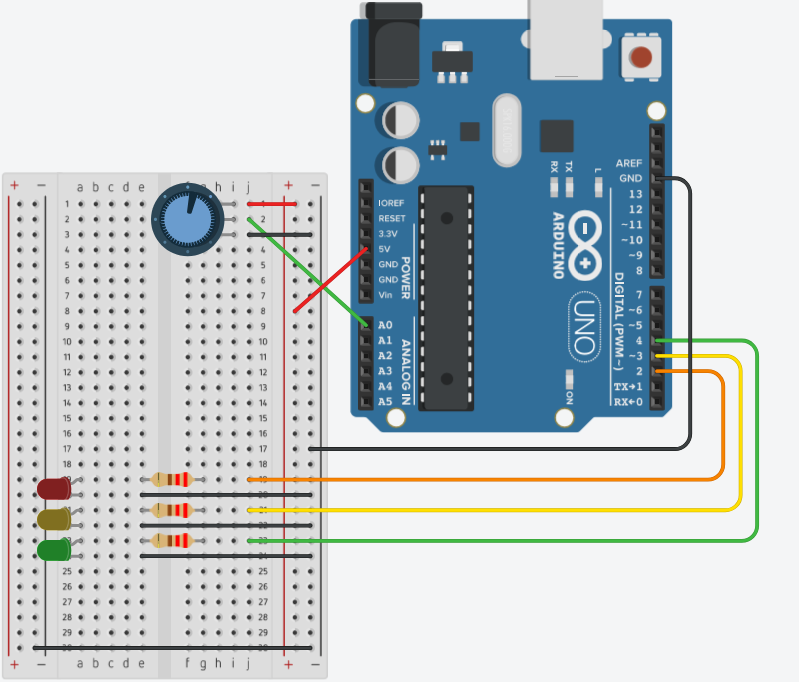
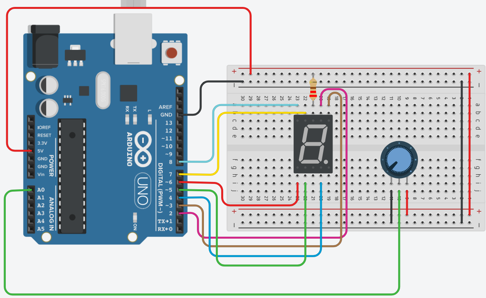

Projetos com Arduino
Projetos feitos com arduino e thinkercad
Contador
Este projeto apresenta um contador de 1 a 9 feito com Arduino. Ele é ideal para quem está começando na eletrônica, mostrando princípios básicos de programação, temporização e lógica.
Semáforo
Este projeto utiliza o Arduino para controlar dois semáforos, simulando o funcionamento real de um cruzamento entre duas vias. Ele mostra conceitos importantes de temporização, lógica de controle e coordenação entre dispositivos. O projeto pode evoluir para versões mais complexas, como sensores que detectam veículos, ajustes automáticos no tempo do sinal.
Semáforo Físico
Este projeto mostra o Arduino físico mostrando a aplicação prática no controle de componentes, mostrando na realidade e não no tinkercad. Ele mostra como eletrônica, programação e montagem se unem para criar um protótipo funcional.
Led acendendo com Potenciômetro
Desenvolvi um projeto com Arduino utilizando um potenciômetro para controlar três LEDs (código). Assim que o valor for lido aumenta, os LEDs acendem de forma sequencial: primeiro o LED 1, depois o LED 2 e, por fim, o LED 3. Abaixo um print do projeto no tinkercad e um vídeo do funcionamento.
Contador com Potenciômetro
Projeto de Contador com Potenciômetro (código), onde o valor analógico do potenciômetro é convertido em etapas para acionar diferentes estados no Arduino. Assim que o potênciometro gira os números vão mudando no led.
